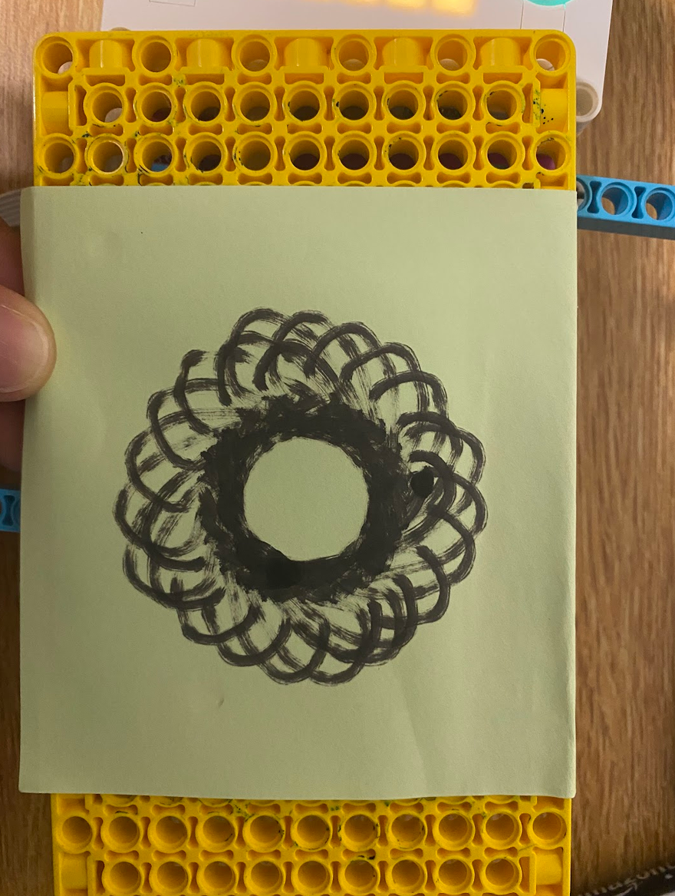
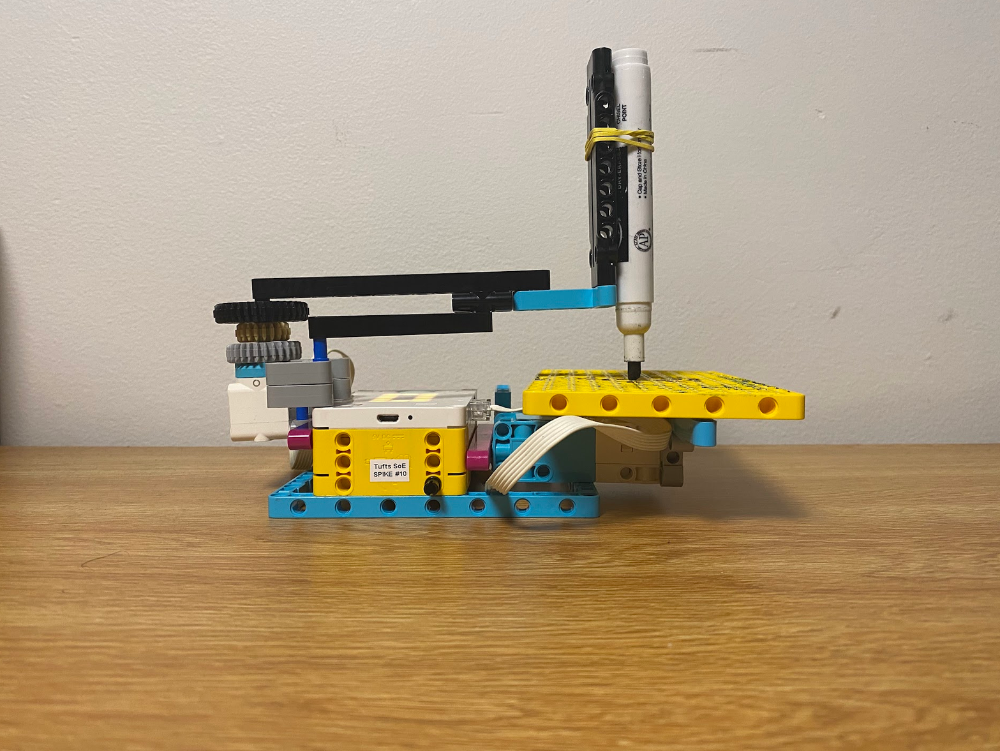
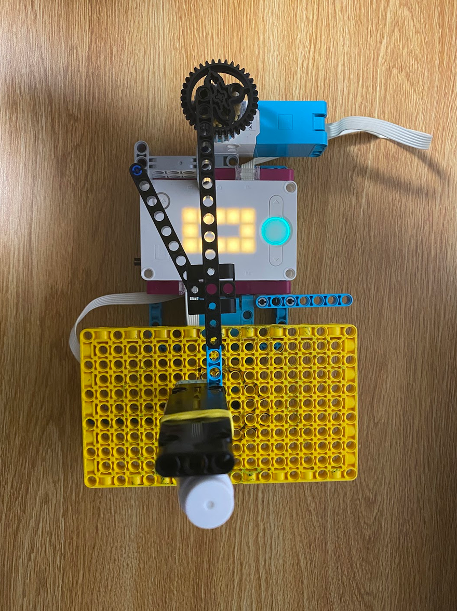

Project Portfolio
Project 5: Spirograph Drawing Machine

The assignment was to create a geometric design using rotating motors. I went through three iterations and struggled to make a pattern. I was able to create a design after realizing that the paper base needed to rotate more slowly than the marker.



